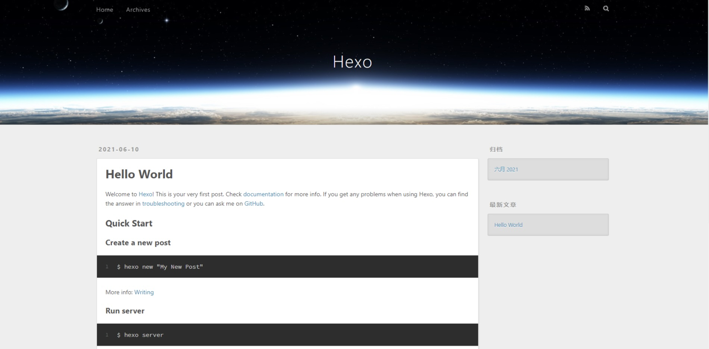
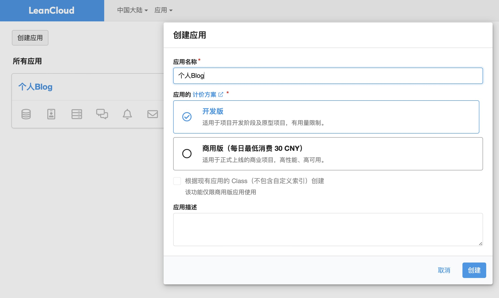
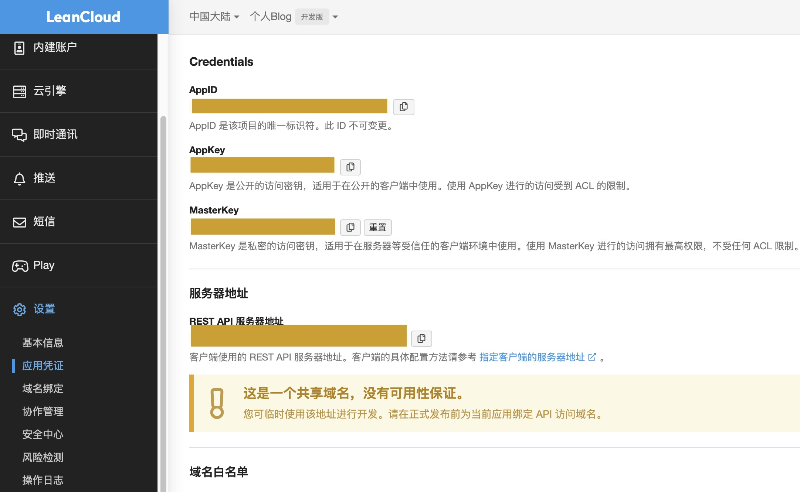
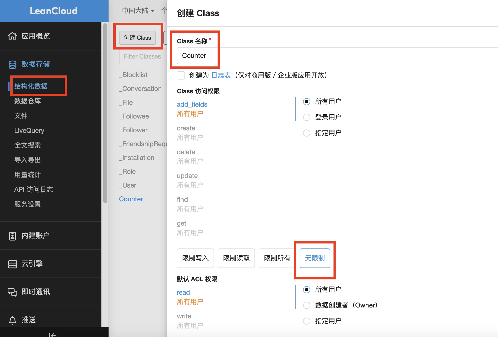
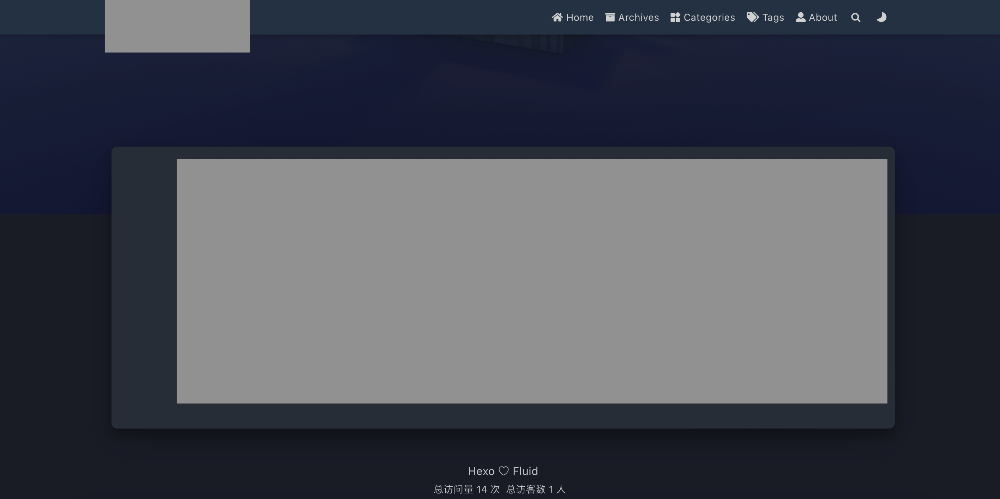

Instruction of Deploy a Blog through Github Pages and Hexo
Instruction of Deploy a Blog through Github Pages and Hexo
This is an instruction of deploy a blog through Github Pages and Hexo. Check documentation for more info.
一、初始化Github Pages
（一）目标
部署带有一篇博客的个人博客网站，并且可以统计每一篇博客和整个网站的浏览量和浏览人数。
（二）实现方法
1. 注册个人Github账号，在自己电脑上安装Git和NodeJS
NodeJS直接点击链接在网页里面找到LTS版本的符合自己电脑的安装包下载安装即可
2. 在Github中创建一个公有仓库，仓库名为<用户名>.github.io
3. 安装Hexo并初始化
在bash shell或者zsh shell中输入如下内容完成Hexo安装
1
sudo npm install -g hexo-cli待显示安装完成后，输入如下内容查看版本，检查是否正确安装
1
sudo npm install -g hexo-cli在shell中转到用于存储Hexo项目的文件夹，输入如下内容创建一个新Hexo项目
1
2
3hexo init blog
cd blog
npm install在shell中输入如下内容，在本地生成相关静态文件(hexo g)并启动(hexo s)，通过浏览器访问浏览器访问 (http://localhost:4000) 查看效果
1
2hexo g
hexo s如果看到如下图片则说明部署成功

4. 更换Fluid主题，并配置相关字段，使界面更加美观实用
通过此网址(https://github.com/fluid-dev/hexo-theme-fluid) 下载Fluid主题并将文件夹重命名为fluid，存放于blog/themes文件夹中
打开blog/_config.yml配置文件，修改theme，language和title等字段
1
2
3
4theme: fluid # 一定要改
post_asset_folder: true # 一定要改，方面后期发布修改博客文章
language: zh-CN # 酌情选择（决定导航栏的显示语言）
title: a blog # 酌情设置（决定浏览器tab的显示内容）与上操作类似，打开blog/thems/fluid/_config.yml配置文件，修改blog_title，text等字段
在shell中输入如下代码，在Blog中添加About页面
1
hexo new page about之后可以在blog/source/about/index.md中修改文件调整页面内容
再次在shell中输入如下内容，通过浏览器访问浏览器访问 (http://localhost:4000) 查看更换主题后的效果
1
2hexo g
hexo s
5. 设置阅读量统计
进入LeanCloud官网注册账号，实名认证并验证邮箱
如下图所示创建应用
 如下图所示，进入设置-应用凭证，记录AppID，AppKey和REST API 服多器地址
 如下图所示，创建类用于存储访问数据，类名必须严格按照图片中的类名设置
 打开blog/thems/fluid/_config.yml配置文件,修改如下内容
1
2
3
4
5
6
7
8
9
10
11
12
13
14
15
16
17
18
19
20# 一定要改
web_analytics:
enable: true
leancloud:
app_id: <AppID>
app_key: <AppKey>
server_url: <REST API 服多器地址>
views:
enable: true
source: "leancloud"
format: "{} 次"
statistics:
enable: true
source: "leancloud"
pv_format: "总访问量 {} 次"
uv_format: "总访客数 {} 人"再次在shell中输入如下内容，通过浏览器访问浏览器访问 (http://localhost:4000) 查看是否在页面下方显示访问情况
1
2hexo g
hexo s
6. 上传至Github
安装hexo-deployer-git
1
sudo npm install hexo-deployer-git --save如图所示，获得Personal access tokens，并注意在获得tokens时要选择Tokens(classic)并勾选repo
打开blog/_config.yml配置文件,设置部署参数
1
2
3
4deploy:
type: git
repo: https://<你的Personal access tokens>@github.com/<你的Github用户名>/<你的Github用户名>.github.io.git
branch: main在shell中输入如下内容，通过浏览器访问浏览器访问 (https://<你的Github用户名>.github.io/)查看是否部署成功
1
hexo g -d
二、添加删除或修改博客文章
1. 添加博客文章
方法1:
在shell中转到项目文件夹blog，并在shell中输入如下内容，添加名字为new_article的博客文章，在blog/source/_posts中找到new_article.md和new_article文件夹，对其修改即可添加博客文章1
hexo new post new_article方法2:
在blog/source/_posts中创建一个文件夹，再在此文件夹里创建new_article.md和new_article文件夹，对其修改即可添加博客文章
（也可以直接在blog/source/_posts里创建new_article.md和new_article文件夹）
2. 删除或修改博客文章
在blog/source/_posts中找到xxx.md和xxx文件夹，对其删除或修改即可
3. 插入代码
在md里输入如下代码即可
1 | |
4. 插入图片
方法1: 在xxx文件夹中存放test.jpg，并在xxx.md中输入以下代码
1
{% asset_img test.jpg example %}1
2
3<center>
<img src="test.jpg" alt="图片描述" width="50%"/>
</center>方法2: 找到图片的网址为xxx，并在xxx.md中输入以下代码
1
2
3<center>
<img src="并在xxx.md中输入以下代码" alt="图片名称" width="50%"/>
</center>
5. 在shell中输入如下内容，通过浏览器访问浏览器访问(http://localhost:4000) 查看是否更改成功
1 | |